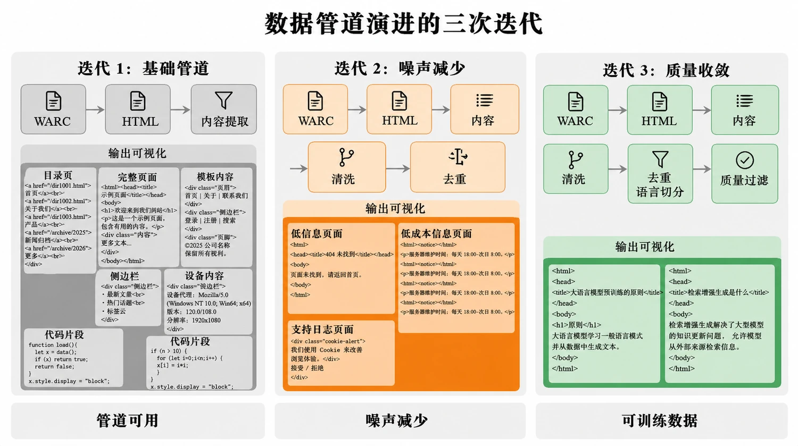
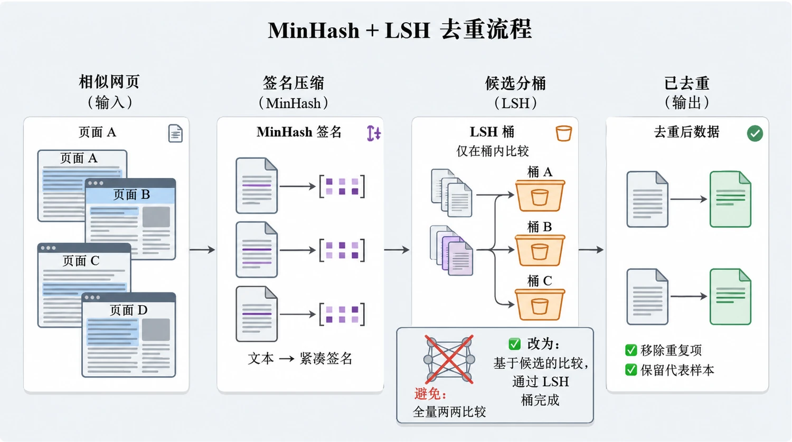
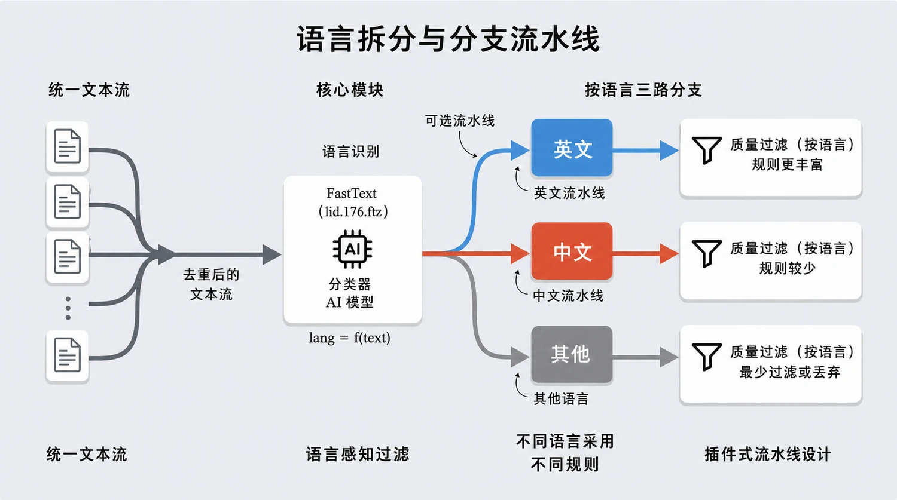
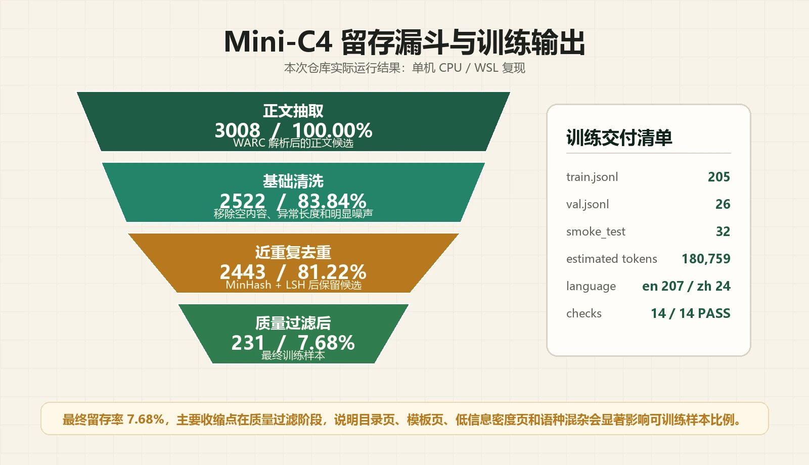
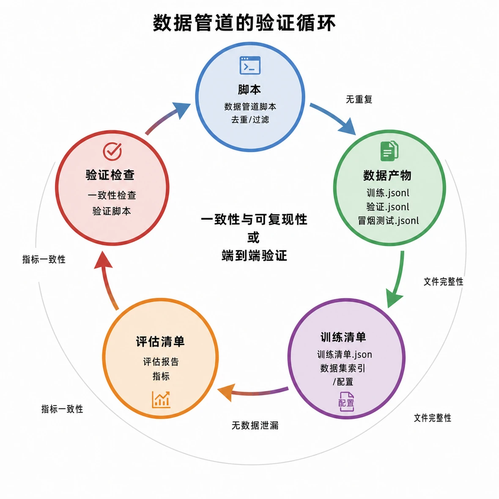

网页噪声高
导航、页脚、广告、脚本、评论和模板内容会挤占正文比例。第一步不是训练，而是把 WARC 里的 HTML 响应稳定转成正文候选。
网页是大模型预训练的重要数据来源，但原始网页通常包含模板噪声、重复转载、多语言混杂、目录页、广告页和低信息密度内容。这个项目的价值，是把这些问题拆成一条可复现的数据处理链路，并让每一层过滤都有指标可复盘。
导航、页脚、广告、脚本、评论和模板内容会挤占正文比例。第一步不是训练，而是把 WARC 里的 HTML 响应稳定转成正文候选。
转载、镜像站和模板页会放大重复文本，让训练分布倾斜。项目用 MinHash + LSH 做近重复去重，避免全量两两比较。
清洗后的文本还不是可交付数据集。训练侧需要确定性 train / val、manifest、hash、token 统计和一致性检查。
我把流水线按工程边界拆成三段：先把网页归档变成正文文本，再把正文文本治理成训练语料，最后把语料封装成训练系统可以消费和验收的数据产物。
使用 warcio 流式读取 WARC response，筛选 HTML 响应，再用 trafilatura 提取主内容区域。
串联启发式清洗、MinHash + LSH 去重、fastText 语种拆分和 KenLM 英文质量过滤。
输出 train / val / smoke_test JSONL、training_manifest、评估报告和一致性检查结果。

每个关键点解决什么工程问题，以及为什么这么设计。
用 warcio 逐条读取归档记录，避免一次性加载大文件；用 trafilatura 抽取正文，减少导航、页脚、模板内容带来的噪声。
网页语料不能做全量两两比较。MinHash 把文本压成签名，LSH 把候选限制在相似桶里，降低比较成本。
使用 fastText 识别语种；英文侧使用 KenLM 做质量过滤，中文侧保留为后续质量模型增强点。
最终产物不是散乱文本，而是带 id、url、lang、text_sha1、estimated_tokens、split 的 JSONL，并配套 manifest 与检查报告。



| 阶段 | 样本数 | 相对 extracted 留存 | 工程含义 |
|---|---|---|---|
| extracted | 3008 | 100.00% | 从 WARC 中拿到正文候选，只能说明“有文本”，不能说明“能训练”。 |
| clean | 2522 | 83.84% | 基础清洗先压掉明显异常文本，为后续去重和质量判断节省成本。 |
| deduplicated | 2443 | 81.22% | 去重收缩不剧烈，但改善训练分布健康度，减少镜像和模板重复。 |
| final | 231 | 7.68% | 进入最终训练集的数据需要同时通过语言、长度、重复度和质量门，代表这批样本已具备训练交付条件。 |

验收闭环的价值是让代码、数据和报告互相对得上，减少数据漂移和报告失真的风险。
我把这一版控制在单 shard、单机 CPU 的复现边界内，先验证方法闭环、质量指标和验收链路。后续如果扩展数据量，应先增强控制面和质量建模，再扩大处理规模。
仓库中保留完整环境说明。核心路径是先检查依赖，再运行流水线，最后生成可观测性报告。
python scripts/check_env.py
python scripts/run_pipeline.py
python scripts/build_observability_report.py通过这次复现，我把 LLM 网页语料任务拆成了可执行、可验证、可复盘的数据工程链路，也明确了当前单机原型的边界和后续扩展路径。